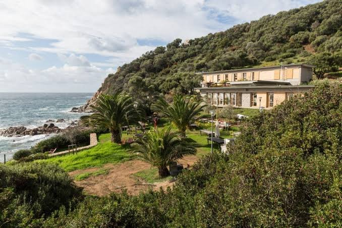

About the conference
New recording technologies now capture the activity of tens of thousands of neurons at once, across brain regions and over weeks of behaviour. Our theoretical frameworks have not kept pace: turning these data into an understanding of how the brain computes requires new ideas from mathematics, statistics, physics and computer science.
This conference creates a space for in-depth, mathematically explicit exchange between theorists who usually work in separate communities. The programme emphasises methods, guarantees and transfer across systems, with time to work through assumptions and derivations, not only results.
Organizers
- Joao BarbosaNeuromodulation Institute, INSERM, France
- Lea DunckerColumbia University, USA
- Lorenzo FontolanINMED, INSERM, France
- Agostina PalmigianoGatsby Computational Neuroscience Unit, UCL, UK
- Lorenzo PosaniParis Brain Institute, CNRS, France
Scientific committee
- Srdjan OstojicCNRS, École Normale Supérieure, Paris
- Aleksandra WalczakCNRS, École Normale Supérieure, Paris
Contact
For questions about the scientific programme, please contact the organizers. Practical questions about accommodation and travel are handled by the IESC.
Scientific themes
The meeting is organised around five connected axes, each covered over two days.
- Geometry of population activityManifolds, dimensionality and alignment of neural representations across tasks and individuals.
- Latent-variable and statistical modelsState-space models, variational inference and identifiability for high-dimensional neural time series.
- Theory of computing circuitsDynamical mean-field theory, structured connectivity and control theory of recurrent networks.
- Theory of learningStatistical physics of learning, learning under biological constraints, learning regimes.
- NeuroAIDeep networks as computational hypotheses and comparisons of artificial and biological representations.
Speakers
Lecturers and seminar speakers confirmed so far. The list will be updated as further speakers confirm.
- Alex WilliamsNew York UniversityGeometry
- Alex Cayco-GajicÉcole Normale Supérieure, ParisGeometry
- Valeria FascianelliColumbia UniversityGeometry
- Ramon NogueiraUniversity of ChicagoGeometry
- Pedro GonçalvesKU LeuvenStatistical models
- Joana Soldado MagranerCarnegie Mellon UniversityStatistical models
- Zachary KilpatrickUniversity of Colorado BoulderNeural circuits
- Francesca MastrogiuseppeSISSA, TriesteNeural circuits
- Leenoy MeshulamBrown UniversityNeural circuits
- Yonathan AljadeffUC San DiegoNeural circuits
- Francesca MignaccoPrinceton UniversityLearning
- Sebastian GoldtSISSA, TriesteLearning
- Samuel MuscinelliUniversity of ChicagoLearning
- Dan LevensteinYale UniversityNeuroAI
- Ulises PereiraAllen InstituteNeuroAI
- Richard GaoGoethe University FrankfurtNeuroAI
- To be confirmedSpeaker to be announced
- To be confirmedSpeaker to be announced
- To be confirmedSpeaker to be announced
- To be confirmedSpeaker to be announced


Format
| Mornings | Two-hour chalkboard lectures that work through derivations and algorithms in detail. |
|---|---|
| Afternoons | Research seminars on the day's theme, including contributed talks selected from participant abstracts. |
| Late afternoons | Poster sessions with whiteboards, a mentorship session across career stages, and a closing round table on the future of theoretical neuroscience. |
| Participants | About 65 in total: invited speakers and around 40 PhD students, postdocs and early-career researchers selected by application. |
Venue

The conference takes place at the Institut d'Études Scientifiques de Cargèse (IESC), a residential institute on the west coast of Corsica, about an hour by road from Ajaccio airport. Participants are housed on site or in the village, and lunches are taken together at the institute.
Dates, registration fees and travel information will be posted here once confirmed.
Apply to attend
About 40 places are open to PhD students, postdocs and early-career researchers. Applicants can request to present a poster or a contributed talk.
Who should apply
Researchers with a strong background in a quantitative discipline (mathematics, physics, statistics, computer science or computational neuroscience) who work on, or want to work on, theory and data analysis for neural systems.
How to apply
- Prepare a short CV and a one-paragraph statement explaining how the conference relates to your work.
- Prepare an abstract (up to 300 words) if you would like to present a poster or a contributed talk, and indicate your preference.
- Submit your application through the IESC online registration system once the call opens.
Selection
Participants are selected by the organizers for technical strength and fit with the programme, and for diversity of research area, career stage, institution and geography. Contributed talks are chosen from submitted abstracts. We aim for a gender-balanced meeting.
Financial support
We are seeking funding to support participants, with priority for early-career researchers and for applicants from countries with limited research funding. Details will be given with the call.